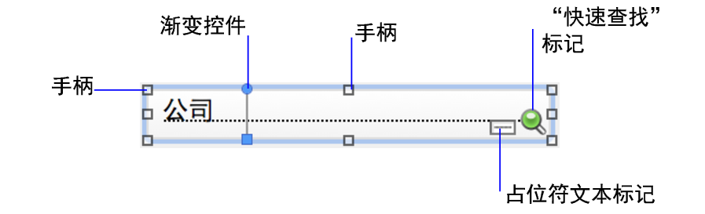

您可以通过以下处理布局上的对象的操作来编辑布局：定位和排列对象、调整对象大小以及对其外观进行其他更改。例如，您可以通过更改布局部分和布局背景的填充设置来更改其格式属性。还可以处理字段 - 控制字段的外观和行为以及数据在字段中的显示方式。
处理某个对象时，您会看到提供该对象相关信息并指示如何对其进行编辑的各种控件、标记和其他元素。请参阅调整对象的大小和形状、使用颜色渐变进行填充和识别布局对象上的标记（图标）。

指针将变成箭头指针。
2. 执行以下某项操作。
目的 | 在布局模式下，执行此操作 |
选择一个对象 | 使用箭头指针，单击该对象。 |
一次选择几个对象 | •拖动箭头指针形成一个包含这些对象的选择框。选择框不必完全包围对象。要避免包含部分选定的对象，请在拖动时按 Ctrl 键 (Windows) 或 Command 键 (macOS)。 注释 如果选择弹出框上的对象，确保在您开始拖动时，箭头指针位于弹出框上而不是布局上。否则，会选中布局上的对象。 •或者，按住 Shift 键的同时分别单击每个对象。 |
在组中选择一个对象 | 使用箭头指针单击该组，然后单击组内的一个对象。 |
选择布局上的所有对象 | 选择"编辑"菜单 >"全选"。 |
选择面板控件 | •使用箭头指针，在面板控件的背景范围内单击鼠标。 •或者，拖动该面板控件边界的任何部分周围的箭头指针。 |
选择弹出框 | 使用箭头指针，双击弹出框按钮可打开弹出框。然后单击弹出框可进行选择。 |
选择同一类型的所有对象，包括选项卡面板或滑动面板上不在前端的对象（例如所有文本对象或所有矩形） | •单击要选择的对象类型的工具，然后选择"编辑"菜单 >"全选"。 •或者，使用箭头指针，单击一个对象，按 Shift 键 (Windows) 或 Option 键 (macOS)，然后选择"编辑"菜单 >"全选"(Windows) 或"选择相同"(macOS)。 注释 未选定关于弹出框的对象。 |
选择所有字段 | 使用箭头指针，单击一个字段，按 Shift 键 (Windows) 或 Option 键 (macOS)，然后选择"编辑"菜单 >"全选"(Windows) 或"选择相同"(macOS)。 |
选择入口 | 在箭头指针状态下，单击入口的边界，或入口内不包含字段或对象的任何其他区域。 |
选择按钮栏 | •使用箭头指针，单击按钮栏外部的任何位置，然后单击按钮栏内部。 •或者，拖动该按钮栏边界的任何部分周围的箭头指针。 |
选择按钮栏中的段 | 使用箭头指针，选择按钮栏，然后单击一个段或按住 Shift 键并单击多个段。 |
取消选择选定对象 | •单击布局的空白区域或状态工具栏中的任一布局工具。 •或者，按住 Shift 键的同时单击选定对象。 |
•如果不能查看或选择布局上的对象，其他对象可能会堆迭在该对象前面。要隐藏其他对象，请参阅使用"对象"选项卡处理对象。